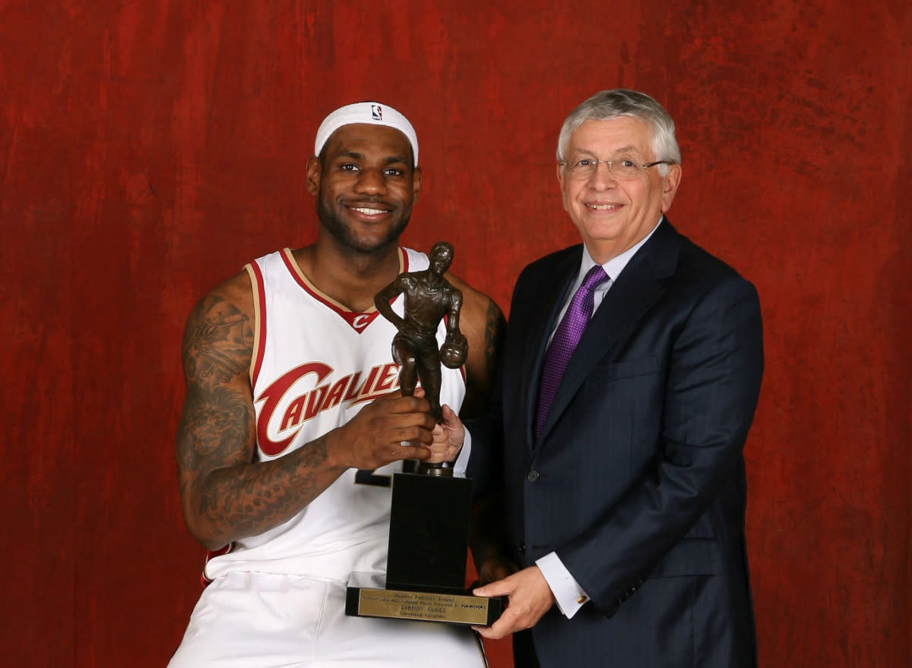
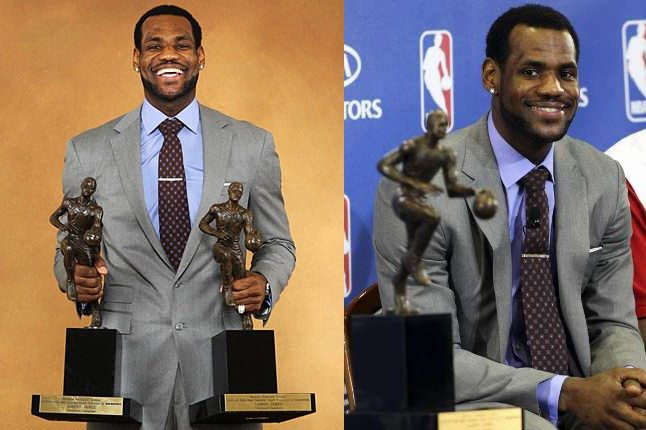
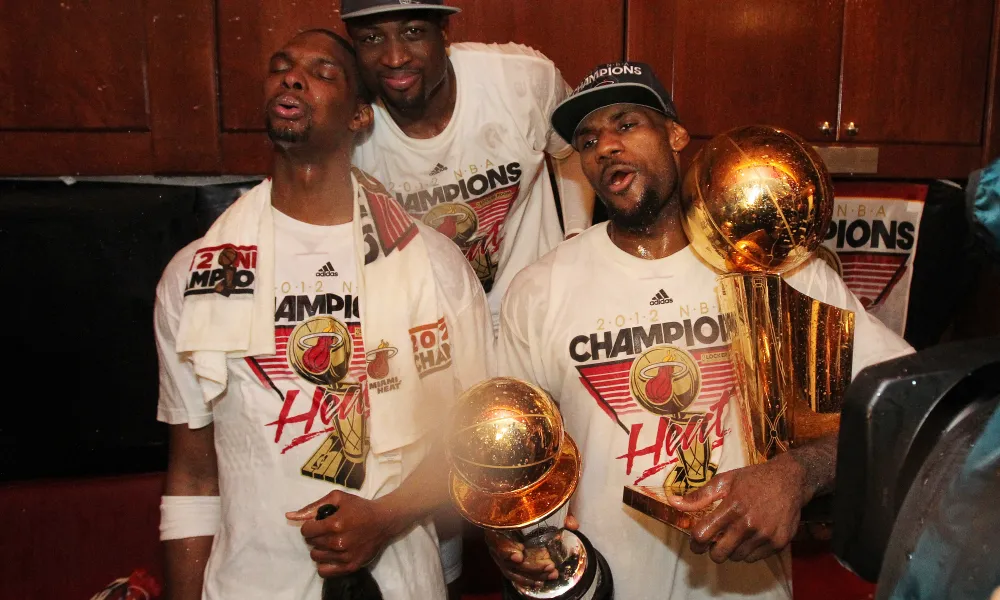
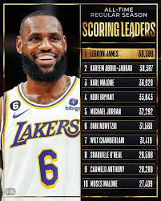

En 2003, LeBron James se declaró elegible para el Draft de la NBA y fue seleccionado como la primera selección general por los Cleveland Cavaliers.
LeBron James gano cuatro premios al Jugador Más Valioso (MVP) de la NBA. Ganó estos premios en las temporadas 2008-09, 2009-10, 2011-12 y 2012-13.


LeBron James gano cuatro premios al Jugador Más Valioso de las Finales (NBA Finals MVP). LeBron ganó los premios de MVP de las Finales en las siguientes temporadas: Temporada 2011-12, cuando jugaba para el Miami Heat, Temporada 2012-13, también con el Miami Heat, Temporada 2015-16, con los Cleveland Cavaliers, Temporada 2019-20, con los Los Angeles Lakers.

LeBron James rompe el récord histórico de puntos anotados de la NBA. El 7 de febrero de 2023, LeBron superó a Kareem Abdul-Jabbar como el líder en puntos conseguidos en su carrera en la NBA, colocándose en la cima de la lista de anotadores de todos los tiempos de la liga.

Ademas de los premios yas mencionados LeBron James gano y seguira sumando premios y records batidos. Aca les mencionamos los records y los premios que LeBron ganó hasta la fecha:
1 vez Novato del Año en la NBA
1 vez Máximo anotador de la NBA
1 vez Máximo asistidor de la NBA
6 veces Líder en eficiencia de la NBA (PER)
19 veces Elegido para el All-Star de la NBA
3 veces MVP del All-Star de la NBA
13 veces Mejor Equipo de la NBA
3 veces Segundo Mejor Equipo de la NBA
3 veces Tercer Mejor Equipo de la NBA
5 veces Mejor Equipo Defensivo de la NBA
1 vez Segundo Equipo Defensivo de la NBA
1 vez Mejor Equipo de Novatos de la NBA
1 vez Premio de Ciudadanía de la NBA
39 veces Jugador del Mes en la NBA
67 veces Jugador de la Semana en la NBA